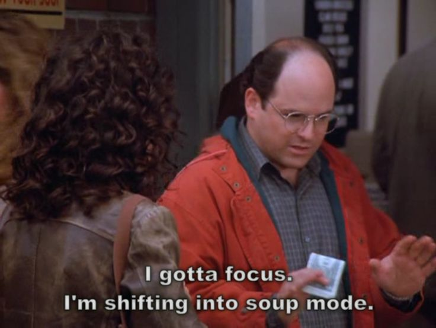

Turkey Chilli (Minus Bread) (from S07E06)

Bread, $2 extra.
Ingredients
- 1 1/2 tsps olive oil
- 1 lb ground turkey
- 1 onion, chopped
- 2 cups water
- 1 28 oz can crushed tomatoes
- 1 16 oz can kidney beans, drained, rinsed, and mashed
- 1 tbsp garlic, minced
- 2 tbsp chili powder
- 1/2 tsp paprika
- 1/2 tsp dried oregano
- 1/2 tsp ground cayenne pepper
- 1/2 tsp ground cumin
- 1/2 tsp salt
- 1/2 tsp ground black pepper
Directions
- Heat the oil in a large pot over medium heat. Place turkey in the pot, and cook until evenly brown. Stir in onion, and cook until tender.
- Pour water into the pot. Mix in tomatoes, kidney beans, and garlic. Season chili powder, paprika, oregano, cayenne pepper, cumin, salt, and pepper. Bring to a boil. Reduce heat to low, cover, and simmer 30 minutes.
Nutrition Facts
Per serving: 185 calories; protein 16.4g; carbohydrates 18.8g; fat 6.1g; cholesterol 41.8mg; sodium 450.3mg.
Recipe Source
Home